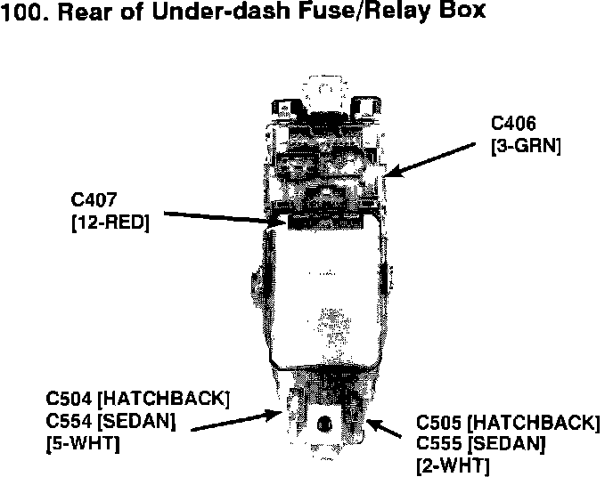

Operation CHARM
: Car repair manuals for everyone.
Home
>>
Acura
>>
1993
>>
Integra L4-1678cc 1.7L DOHC (VTEC) FI
>>
Repair and Diagnosis
>>
Relays and Modules
>>
Relays and Modules - Powertrain Management
>>
Relays and Modules - Fuel Delivery and Air Induction
>>
Main Relay (Computer/Fuel System)
>>
Diagrams
>>
Diagram Information and Instructions
>>
Locations and Photographs
>>
Component/Connector Locations (Photographs)
>>
76 Thru 100
>>
100
76 Thru 100: 100
